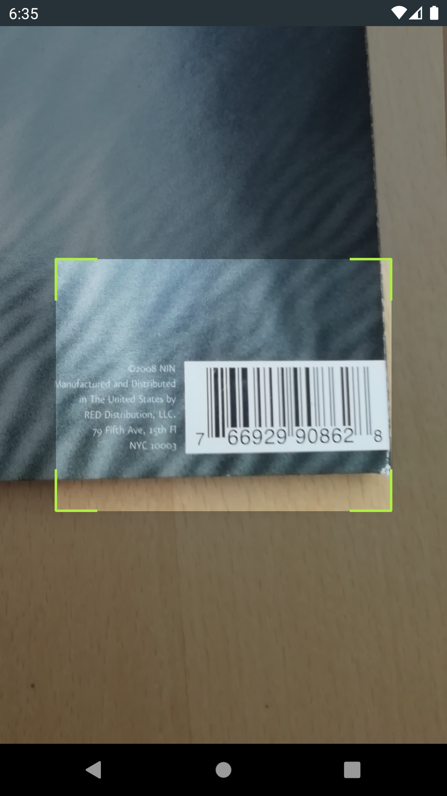
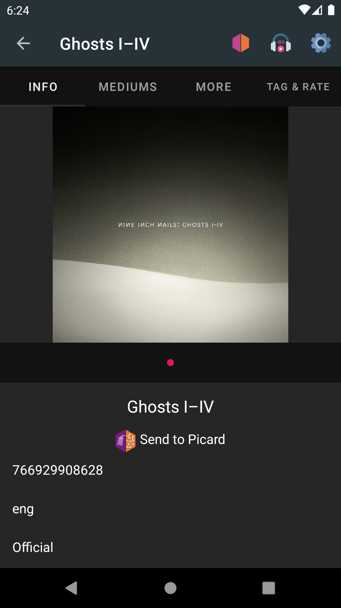
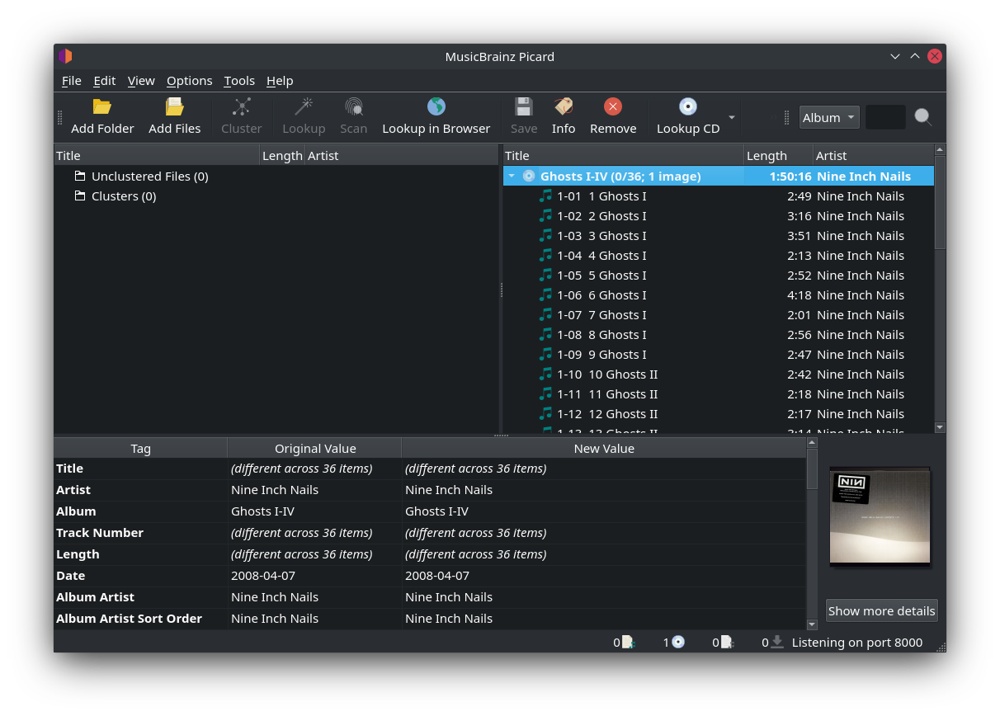

Chargement des versions avec MusicBrainz pour Android¶
Si vous disposez d’un téléphone Android, vous pouvez utiliser l’application MusicBrainz for Android pour rechercher les sorties par recherche textuelle ou par code-barres et les charger dans Picard sur votre ordinateur.
C’est utile par exemple si vous avez déjà extrait vos CD et que vous voulez maintenant étiqueter vos fichiers extraits avec Picard en utilisant exactement les données des disques que vous possédez. Vous pouvez alors utiliser votre téléphone pour scanner les codes-barres de vos CD et charger leurs données dans Picard, puis utiliser ces données pour étiqueter vos fichiers locaux.
Pour que cela fonctionne, votre téléphone et votre ordinateur doivent être connectés au même réseau.
Configuration du Picard¶
Dans , activez « Intégration du navigateur » et désactivez « Écoute uniquement sur localhost ». Il est recommandé de conserver le port d’écoute sur la valeur par défaut 8000, mais vous pouvez également le modifier.
Une fois les options enregistrées, vérifiez si Picard affiche le message « Listening on port 8000 » dans la barre d’état en bas à droite de la fenêtre principale.

Le numéro de port réel peut varier, mais le numéro par défaut est 8000. Notez le numéro de port, vous en aurez besoin pour configurer l’application Android à l’étape suivante.
Voir aussi
Installation et configuration de l’application MusicBrainz Android¶
Installez MusicBrainz pour Android sur votre téléphone. Vous pouvez télécharger la dernière version de l’application soit sur le Google Play Store ou F-Droid.
Une fois installée, lancez l’application et appuyez sur l’icône des paramètres en haut à droite. Faites défiler la liste jusqu’aux paramètres de Picard. Pour l’adresse IP, entrez l’adresse IP de votre ordinateur sur lequel Picard fonctionne. Selon la configuration de votre réseau local, vous pouvez également entrer le nom d’hôte de votre ordinateur au lieu de l’adresse IP.

Pour le Port, entrez le port d’écoute de Picard tel qu’il est affiché dans l’écran principal de Picard (voir la section précédente). La valeur par défaut est 8000.
Avant de continuer, assurez-vous que Picard est en cours d’exécution et que le message d’état « Listening on port… » est affiché. Assurez-vous également que votre téléphone est connecté à votre réseau local.
Chargement des communiqués par code-barres¶
Vous pouvez utiliser votre téléphone comme un scanner de codes-barres pour charger les métadonnées de vos supports physiques:
Sur l’écran principal de l’application Android, tapez sur « Scan ».

Scannez le code-barres d’un CD, d’un disque ou d’un autre support musical.
Si une version avec le code-barres scanné est trouvée sur MusicBrainz, l’application se chargera et montrera les détails de la version.
Tapez sur « Send to Picard ». Si tout a été configuré correctement, la version sera chargée dans Picard sur votre ordinateur.

{kind=link}
{kind=link}
Vous pouvez maintenant continuer à étiqueter vos fichiers locaux en les faisant correspondre aux pistes chargées comme décrit dans Mise en correspondance des fichiers aux pistes.
Note
Si vous souhaitez uniquement utiliser la fonctionnalité de scanner de codes barres pour trouver et charger les sorties de vos CD physiques, LP ou autres supports musicaux, vous pouvez également utiliser l’application Picard Barcode Scanner. La fonctionnalité et la configuration sont similaires à ce qui est décrit ci-dessus, mais l’application se concentre sur la lecture des codes barres et l’envoi des résultats à Picard.
Chargement des communiqués par recherche¶
Au lieu d’effectuer une recherche par code-barres, vous pouvez également effectuer une recherche textuelle sur votre téléphone:
Sur l’écran principal de l’application Android, tapez sur « Recherche ».
Sur la page de recherche, sélectionnez « Release » et entrez un terme de recherche, par exemple un titre d’album ou un nom d’artiste.

Les résultats de la recherche affichent une liste de communiqués correspondants. Tapez sur l’un d’entre eux pour afficher les détails du communiqué.
Tapez sur « Send to Picard ». Si tout a été configuré correctement, la version sera chargée dans Picard sur votre ordinateur.
Chargement des communiqués du Tagger¶
Au lieu de trouver un communiqué par code-barres ou par une recherche pour l’envoyer à Picard, vous pouvez également envoyer un communiqué à partir d’un fichier audio balisé actuellement stocké sur votre appareil:
Sur l’écran principal de l’application Android, tapez sur « Tagger ».
Sur le tagger, sélectionnez votre version et appuyez sur l’icône MusicBrainz en bas de l’écran.

Si tout a été configuré correctement, la version sera chargée dans Picard qui tourne sur votre ordinateur.